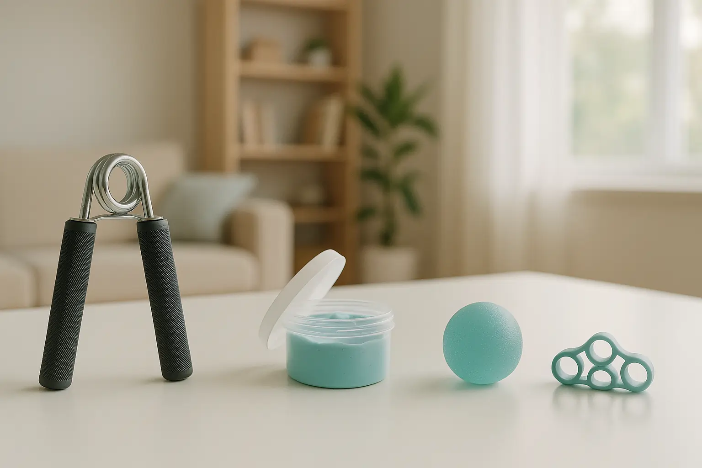

Stronger in Your Hands: Simple At-Home Exercises to Improve Grip and Dexterity


20
OCT
Apricot Care
You know the feeling. The jar lid that just won’t budge. The button that’s suddenly tricky to fasten. The pen that feels slippery. For many of us, especially those recovering from a neurological event or managing a condition like arthritis, a simple loss of hand strength and dexterity can feel like a loss of independence.
At Apricot Care, we believe that rehabilitation and strength building happen every day, not just during therapy sessions. That’s why our team, with experience aligned with the best practices of a neuro rehabilitation centre in Pune, has put together this simple, safe guide to help you rebuild your hand strength and dexterity from the comfort of your home.
Let's get started.
Why Your Hand Health is a Window to Your Independence
Think of your hands as a direct connection to your brain. Every time you pick up a cup, write a note, or turn a key, your brain and nerves are working in perfect harmony. When this connection is weakened by a stroke, an injury, or the natural aging process, it can be frustrating.
Improving your hand function isn't just about stronger muscles. It’s about:
- Neuroplasticity: Re-teaching your brain new pathways to control your hands.
- Safety: A strong grip prevents drops and falls.
- Confidence: Regaining the ability to perform daily tasks without help.
The Two Keys: Grip Strength vs. Hand Dexterity
It’s helpful to know the difference. Think of them as two best friends who work together.
- Grip Strength is the raw power in your hands and forearms—the force you use to squeeze, hold, and carry.
- Hand Dexterity is the skill and coordination—the tiny, precise movements you use to button a shirt, use a key, or thread a needle.
A good routine works on both power and precision.
Safety First: Your Golden Rules Before You Begin
Your safety is the most important thing. Please follow these rules before starting any exercise.
- Talk to Your Therapist or Doctor: Especially if you are in active recovery. They know your specific needs.
- Listen to Your Body: This is the most crucial rule. A little muscle tiredness is normal. Sharp, shooting, or joint pain is a signal to stop immediately.
- Go Slow: Don't rush. Focus on slow, controlled movements. They are more effective and safer than fast, jerky ones.
- Breathe: It sounds simple, but don’t hold your breath. Breathe steadily throughout each exercise.
The Essential 5-Minute Hand Warm-Up
Never skip the warm-up! It prepares your muscles and joints for action and prevents injury.
- Prayer Stretch: Sit comfortably. Press your palms and fingers together in front of your chest, like you’re praying. Hold for 20 seconds.
- Wrist Circles: Extend your arm and gently rotate your wrist in a circle 10 times. Then, rotate it the other way 10 times. Repeat with the other hand.
- Finger Pulls: Gently pull each finger slowly towards your body until you feel a light stretch. Hold for 5 seconds per finger.
Your At-Home Hand Gym: No Fancy Equipment Needed
You don’t need a gym membership. Your house is full of tools to help you get stronger.
Section 1: Dexterity Drills for Skill and Coordination
These exercises are like physical therapy for the tiny muscles in your hands, retraining your brain for fine motor control.
- Finger Taps: Rest your hand flat on a table. One by one, lift each finger and tap it down, starting with your index finger and going to your pinky, then reverse. Do this for 30 seconds per hand. It’s harder than it sounds!
- Thumb-to-Finger Touch: Touch the tip of your thumb to the tip of your index finger to make an ‘O’. Then, touch your thumb to your middle finger, ring finger, and pinky. Go slowly and make sure each ‘O’ is perfect. Repeat 5 times per hand.
- Spider Walking: Place your hand flat on a table. Walk your fingers forward and backward like a spider, keeping your palm still. This is excellent for individual finger control.
Section 2: Grip Strength Builders with Household Items
This is where you build the power for those jar lids and grocery bags.
- Towel Wringing: Grab a small hand towel. Hold it at both ends and twist it in opposite directions, as if you’re wringing out water. Do 10 twists in one direction, then 10 in the other.
- The Amazing Rice
Bucket: Find a small bucket or a deep bowl and fill it
with uncooked rice. This is one of the best tools you have.
- Rice Sinks: Plunge your hand deep into the rice and open and close your fist.
- Rice Pinches: Pinch handfuls of rice between your fingers and thumb.
- Water Bottle Curls: Hold a plastic water bottle (start with a half-full one) in your hand, palm facing up. Rest your forearm on a table and slowly curl your wrist up towards the ceiling. Lower it back down slowly. Do 10-12 repetitions.
Section 3: The Power of "Open": Don't Forget Your Extensors
Most people only train their closing muscles. But balance is key to hand health. Strong extensors (the muscles that open your hand) prevent strain and improve function.
- Rubber Band Finger Extensions: Place a wide rubber band around your fingers and thumb. Slowly open your hand against the resistance of the band, then slowly close it. Repeat 15 times. This is a classic exercise recommended by many therapists, including those at leading facilities like a neuro rehabilitation centre in Pune.
Putting It All Together: Sample Daily Routines
Don't feel overwhelmed. You don't need to do everything at once. Here are two simple routines to get you started.
Routine 1: The 10-Minute Morning Wake-Up
This routine is gentle and perfect for starting your day or for those with arthritis.
- Warm-Up (2 minutes)
- Finger Taps (1 minute)
- Thumb-to-Finger Touch (1 minute)
- Prayer Stretch (30 seconds)
- Towel Wringing (1 minute)
- Rubber Band Extensions (1 minute)
- Repeat with other hand.
Routine 2: The Strength Builder (3 times a week)
This is a more focused strength session.
- Warm-Up (3 minutes)
- Rice Bucket Exercises (3 minutes per hand)
- Water Bottle Curls (2 sets of 12 per hand)
- Towel Wringing (2 minutes)
- Spider Walking (1 minute per hand)
The Big Question: How Long Until I See Results?
Be patient with yourself. Recovery and strength building are a journey, not a race.
Most people notice small improvements—like less fumbling with keys—within 2-3 weeks of consistent practice. Significant strength gains usually take 6-8 weeks. The key word is consistent. Doing a little bit every day is far better than doing a lot once a week.
Beyond Exercise: Tips for Everyday Hand Health
- Stay Hydrated: Drinking enough water keeps your tendons and muscles supple.
- Be Mindful: Look for small ways to use your hands during the day. Peel your own vegetables, squeeze a stress ball while watching TV, or knead dough.
- Rest: Your hands need time to recover and get stronger, so listen to your body.
A Final Word from Apricot Care
Regaining your strength and independence is a journey of a thousand small steps. Every time you complete one of these exercises, you are taking one of those steps. You are building not just muscle, but confidence.
At Apricot Care, our philosophy is rooted in compassionate, professional care that empowers our residents and clients. We understand the profound importance of neurorehabilitation and functional independence, an approach we share with highly respected institutions like a neuro rehabilitation centre in Pune.
If you or a loved one are struggling with recovery and need a more structured, supervised rehabilitation program, we are here to help. Our team is dedicated to creating personalized care plans that bring strength and joy back into everyday life.
Ready to take the next step? Contact Apricot Care today for a compassionate consultation. Let's build a stronger tomorrow, together.